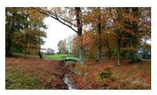
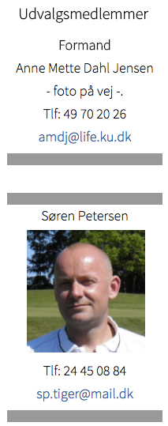

<div class="pages">
  <div data-page="natur-og-miljo" class="page navbar-fixed toolbar-fixed" >
    <div class="navbar">
      <div class="navbar-inner">
        <div class="left">
          <a href="#" class="link back icon-only"><i class="icon icon-back"></i></a>
          <!-- <a href="#" class="back link icon-only"><i class="icon icon-back"></i></a> -->
        </div>
        <div class="center">Natur og Miljøudvalget</div>
        <!-- <div class="right"></div> -->
        <div class="right">
        </div>
      </div>
    </div>
    <div class="page-content" style="padding-top:45px;">
       <div class="content-block">
          <p>Hornbæk golfklub har også et Natur og Miljøudvalg.
           <br /><br />
          Vi har en utrolig dejlig bane med en flot natur, og på sigt vil vi gerne have klarlagt, hvilken flora og fauna vi har på vores bane og evt. præsentere det på hjemmesiden.
           <br /><br />
          Udvalget følger også de tiltag, der sker på Natur og Miljøområdet fra DGU´s side, men også hvad der kommer fra regeringen og kommunen og som kan få indflydelse på vores klub.
           <br /><br />
          Lige nu har udvalget 5 medlemmer men vi kunne godt bruge et par stykker mere. Desuden kunne vi godt bruge personer til ad hoc opgaver som f.eks. kortlægning af vores natur på banen.
           <br /><br />
          Skriv til <a href="sekretariatet.html">sekretariatet</a> hvis det kunne have jeres interesse.</p>
          <br />
          
        </div>
    </div>
    </div>
    </div>
  </div>
</div>
